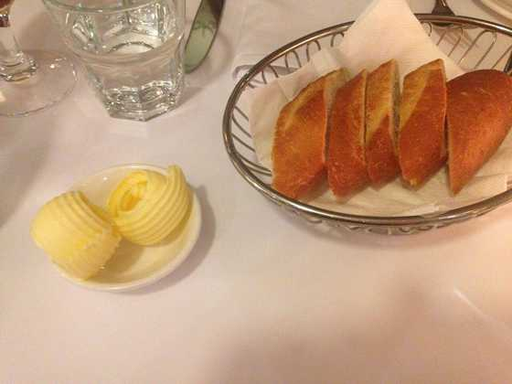

HITOMA
一間ぶんの小さなお店で、その日のパンを焼く。
パン
BREAD
砂糖やバターを控えた、小麦の風味と噛みごたえを楽しむパン。ケースの前でお願いして取ってもらう、小さなお店ならではの買い方です。(確認できた紹介記事より)

ソフト系のパン
やさしい口あたりのパンが中心です。

食事に合うパン
毎日の食卓に寄り添う味わい。

レーズンブリオッシュ
ふんわりしっとり。レーズンの甘みが特徴と紹介されています。

ロールパン・ベーグル類
ベーグルやシナモンロールも人気と紹介されています。

甘いパン
シナモンロールやマフィンなど。

トーストにも
朝ごはんに、イギリスパンなど。
営業時間・定休日・価格・取り扱い商品の詳細は 準備中



口コミ
VOICE
イメージ例
ケースの前でパンを選ぶ時間が楽しい。素朴で、食べ飽きない味でした。
イメージ例
小麦の味がしっかり。翌日も食べたくなって、また寄ってしまいます。
イメージ例
古民家の落ち着いた雰囲気で、買い物のあとも気持ちが静かになりました。
※上記は制作側が作成したイメージ例で、実在のお客様の声ではありません。
お店のこと
ABOUT
HITOMA(ひとま)は、上田市の市街地・大手のレトロなビルの一隅、デザイン事務所の空きスペースで生まれたパン屋さんです。紹介記事には「店名通り一間だけの小さなベーカリー」とあり、店名は一間ほどの小ささに由来すると読み取れます(店名の意味の公式な説明は確認できていません)。
その後、上田市古安曽の古民家をリノベーションした建物へ移転。まわりは住宅と田畑の広がる緑豊かな場所で、2階にはイートインスペースがあると紹介されています。
添加物を使わず、砂糖やバターを控えたリーンなパン。商品は翌日に持ち越さず、焼きたてをお届けする、と紹介されています。
- お店の考え方(制作側のイメージ): 一間ぶんの小さな場所だから、ひとつひとつを丁寧に。
- 電話: 準備中
- 営業時間・定休日: 準備中(情報源により異なるため要確認)


写真クレジット
CREDITS
掲載写真は全てフリー素材(Creative Commons等)のイメージです。
- basket.jpg「French bread」 Marianne Casamance / CC BY-SA 4.0 / 撮影地: フランス
- croissant.jpg「Croissants au beurre (18953292873)」 Herry Wibisono (herryway) / CC0 1.0 / 撮影地: 撮影地不明
- slices.jpg「Slices of sourdough bread」 Angel Ganev / CC BY 2.0 / 撮影地: 撮影地不明
- wheat.jpg「Ears of wheat」 Daniela M. / CC BY-SA 4.0 / 撮影地: イタリア
- brioche.jpg「Brioche Nanterre」 Msayago10 / CC BY-SA 4.0 / 撮影地: ブラジル
- rolls.jpg「Pretzel rolls on a tray, December 2023」 Infrogmation / CC BY-SA 4.0 / 撮影地: アメリカ合衆国
- buns.jpg「Tray of Sweet Buns」 Ceeseven / CC BY-SA 4.0 / 撮影地: 香港
- butterbread.jpg「Baguette and butter curls」 Pru.mitchell / CC BY-SA 4.0 / 撮影地: オーストラリア
- butter.jpg「Butter with a butter knife」 Carey Tilden / CC BY 2.0 / 撮影地: 撮影地不明
- jamtoast.jpg「A modest breakfast at a London hotel. Toast with strawberry jam」 MOs810 / CC BY-SA 4.0 / 撮影地: イギリス
- dough.jpg「2020-05-08 19 00 51 Dough and a rolling pin in the Franklin Farm section of Oak Hill, Fairfax County, Virginia」 Famartin / CC BY-SA 4.0 / 撮影地: アメリカ合衆国(バージニア州)
- pin.jpg「Rolling pin and dough in the kitchen. (49963941638)」 Nenad Stojkovic / CC BY 2.0 / 撮影地: 撮影地不明
- ears.jpg「Wheat close-up」 User:Bluemoose / CC BY-SA 3.0 / 撮影地: 撮影地不明
- jam.jpg「Jam and toast」 Harry Wood / CC0 1.0 / 撮影地: イギリス
ライセンス一覧: creativecommons.org